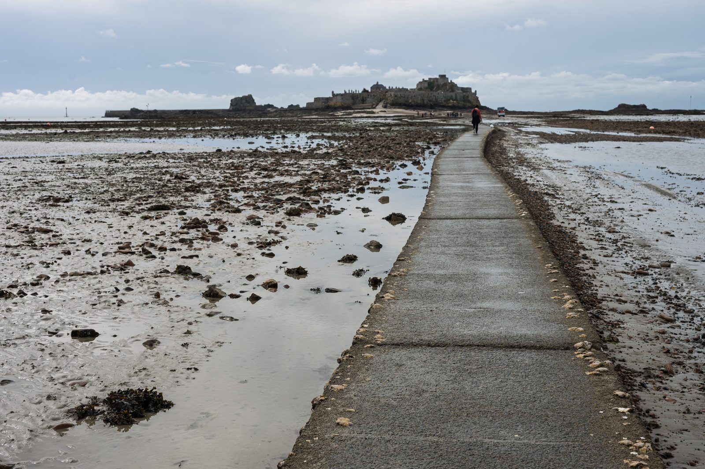
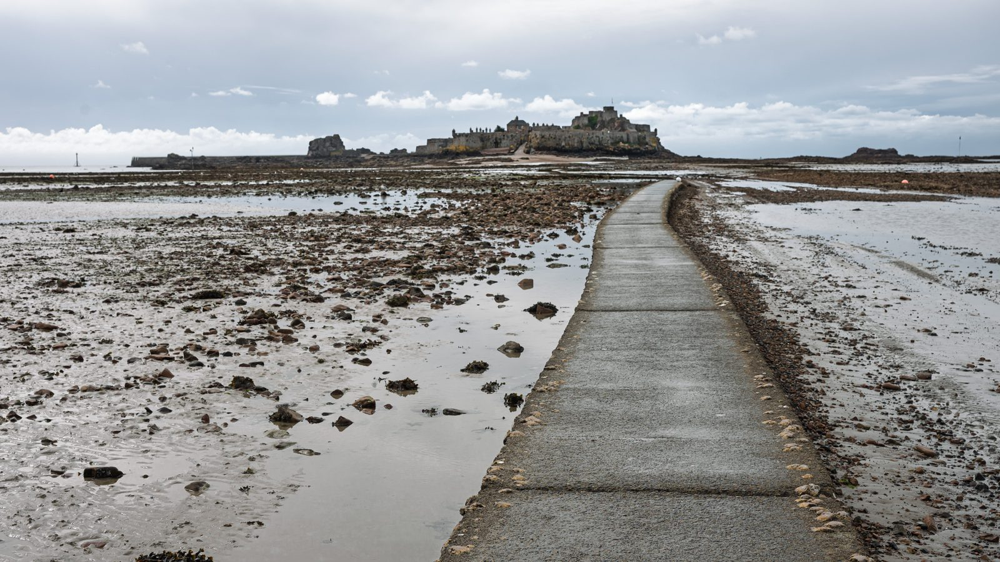
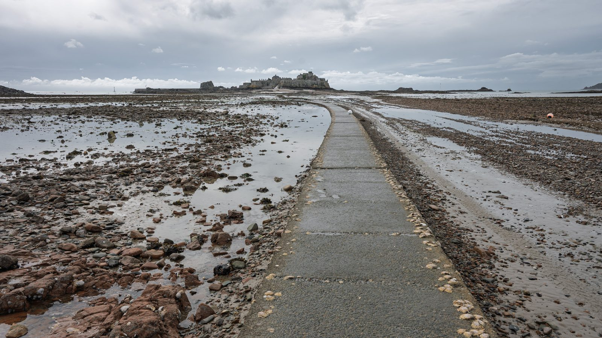

For photographers
Honest feedback on your photographs.
Noemeo reviews a photo the way a thoughtful editor would — what works, what holds the image back, and what to try next — then talks it through with you.
Request beta accessHow it works
A critique you can argue with
-
01
Review
Add a photo and get a verdict on its craft and emotional impact, with a written critique: what's working, what isn't, and concrete suggestions.
-
02
Talk it through
Ask why, push back, or explain what you were going for. Noemeo takes what you tell it into account, and you can see and remove anything it remembers about a photo.
-
03
Edit and compare
Bring in a new version and ask whether it's better. Noemeo compares it against what came before instead of judging it from scratch.
A real session
Low tide: what is the photo about?


Assessment · Competent · Preserved
- Why it works
- The curving causeway provides a strong lead-in through the exposed tidal flats and clearly directs the eye toward the island fortress. The lone walker adds scale, narrative, and a useful red accent within the restrained coastal palette. Broad depth of field preserves the foreground textures and distant architecture, while the soft light supports a quiet, exploratory mood.
- What could be better
- The destination sits small and dark beneath a large, relatively featureless sky, so the visual payoff is weaker than the forceful foreground lead-in promises. The expansive mudflat on the left and heavy pavement at the bottom make the framing feel somewhat loose, while the distant vehicle and scattered visitors dilute the solitary atmosphere. Tonally, the scene is slightly flat and cool.
- Suggested edits
- Crop from the top, left, and slightly from the bottom to enlarge the fortress and walker while retaining the causeway’s curve as the dominant lead-in.
- Apply selective contrast and modest dehazing to the fortress and midground, with a restrained warmer white balance, to improve separation without making the subdued coastal light look artificial.
New version
Do you like this more?
Compared with the original: further from what you were going for
Compared with the original, the wider crop is a mixed change and ultimately moves the photograph further from what mattered. Cutting from the bottom reduces some of the heavy pavement, and the fortress appears slightly larger and more prominent. However, the crop also removes the lone walker—the clearest source of scale, narrative, and warm colour—so the causeway now feels empty and the vehicle becomes the most noticeable human-made accent. The sky and left mudflat still occupy substantial space, while the overall rendering has become cooler and more contrasty/saturated, especially in the blue sky; that gives the scene more punch but works against some of its earlier quiet, restrained atmosphere.
The main point is the mood and emptiness, the sea bottom and the low tide
Compared with the original: closer to what you were going for
That changes the read: removing the walker supports your intended emptiness rather than costing the image its narrative anchor. The wide crop also lets the exposed seabed spread laterally, so the low tide feels more expansive, while the causeway still carries the eye toward the island. On that basis, the current version is closer to your aim than the original. The remaining tension is the bright blue vehicle, which now becomes the strongest interruption to the emptiness, and the punchier blue/cyan rendering makes the scene feel crisper rather than especially hushed. I’d keep the framing, mute the vehicle locally, and slightly restrain the blues while preserving the seabed’s texture.
New version
I removed a vehicle, applied colour, texture and clarity changes as suggested
The vehicle removal helps the intended emptiness: the causeway now reaches the island without that bright, boxy interruption. The colour treatment remains cool and coastal, and the added texture/clarity makes the exposed seabed read more distinctly as the subject. The trade-off is that the foreground stones and mud now feel a little hard and busy, while the blue sky is relatively vivid for a quiet, austere mood. I’d soften those global changes slightly rather than undo them.
Some turns omitted · new version
Re-assessed · Strong · Preserved
- Why it works
- The exposed seabed dominates convincingly, giving the scene the intended sense of emptiness and tidal isolation. The causeway supplies a strong, gently curving lead toward the fortress, while the subdued gray-brown palette and broad, quiet sky reinforce a bleak coastal mood. Repeated pools, stones, and seaweed add texture without obscuring the destination.
- What could be better
- The fortress is a little small and tonally subdued relative to the visually heavy foreground, so the causeway’s promise ends at a destination that lacks emphasis. The broad sky and long slab of featureless concrete dilute the tension, while the tiny red buoys near both edges introduce unnecessary color accents. Overall contrast is slightly flat, particularly around the fortress.
- Suggested edits
- Crop modestly from the top and bottom to reduce empty sky and the heaviest foreground concrete while preserving enough exposed seabed to sustain the low-tide story.
- Darken or desaturate the edge buoys and apply restrained local contrast around the fortress and causeway terminus to strengthen the visual destination without breaking the muted mood.
Some turns omitted · new version
Is it better? I lifted the fortress a little
Compared with the previous version: closer to what you were going for
Yes—lifting the fortress has moved it closer to what mattered. The causeway now resolves at a slightly clearer destination, but the fortress still feels distant and subdued enough to preserve the emptiness. I don’t see an unwanted overall colour or mood drift from the original; the larger change remains the panoramic crop and removal of people/vehicle. I’d stop here rather than brighten it further, which could make the fortress feel pasted onto the muted shoreline.
Excerpt from a real session, shared by the photographer. Noemeo’s replies and assessments are unedited; some turns are left out.
Comparing two photos
Two frames of the same causeway: which one?

A is tighter and more destination-driven: the larger fortress gives the causeway a stronger payoff, though the path becomes a visually heavy foreground slab. B steps back, making the exposed tidal landscape feel broader and lonelier; its stronger left-hand rocks add depth, while the orange buoy near the right edge pulls attention sharply. A’s brighter clouds feel more open, whereas B’s darker overhead cloud gives the scene greater austerity. With no stated purpose yet, these are two distinct emphases rather than a clear winner.
Key differences
- A frames the fortress substantially larger, while B makes it a smaller element within a broader tidal landscape.
- A’s causeway enters from the lower right; B places it nearer center and shows more of its curve.
- B includes stronger reddish foreground rocks on the left, creating more texture and depth than A’s smoother mudflats.
- A has brighter, broken clouds near the horizon; B carries a darker overhead cloud layer and mood.
Which image is more eye-catching?
Favours A
Shot A is more immediately eye-catching. Its larger, clearer fortress provides a stronger visual payoff, and the brighter sky separates the landmark more decisively. B has richer foreground texture and a moodier atmosphere, but its smaller fortress and broad terrain distribute attention more diffusely; the orange buoy also competes with the intended subject.
It is a story of a tide
Favours B
For a story about the tide, Shot B serves the idea better. Its wider field of exposed rocks, pools, channels, and wet sand makes the retreating sea—not merely the fortress—the subject. The longer causeway reinforces the revealed passage across the seabed. The orange buoy remains distracting, so I would remove or subdue it; a modest sky crop could also give the tidal textures more authority.
The whole comparison session, shared by the photographer. Noemeo’s replies are unedited; the key differences it listed are shown for its first reply.
Works with Lightroom Classic
Review photos straight from your catalog
- Review selected photos from the Library menu and keep the critique alongside each photo.
- Suggested ratings and flags are only ever suggestions — Noemeo asks before changing anything, and you can undo it.
- Suggest descriptive keywords for your photos.
- Lightroom is optional: you can also add photos to Noemeo directly.
Privacy
Your photos stay on your computer
Your photos, conversations and everything Noemeo learns about them are kept on your own computer — not in Noemeo's cloud.
To give feedback, Noemeo sends only the photo and text needed for that one review to an AI model, through Amazon Web Services. It is processed for that request and not stored. Noemeo's cloud keeps only what an account needs: your sign-in, the names of the computers you use Noemeo on, and how much of your allowance you've used.
Availability
Noemeo is in closed beta
We're opening access to a small group of photographers first. If you'd like to try it, write to ilya@noemeo.com and tell us a little about how you work.